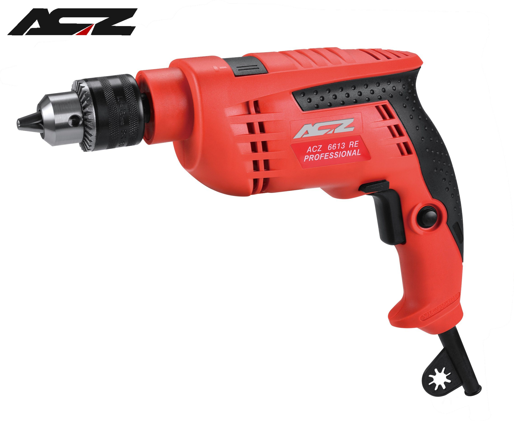

A drill is a tool used for making round holes or driving fasteners. It is fitted with a bit, either a drill or driver chuck.
Hand-operated types are dramatically decreasing in popularity and cordless battery-powered ones proliferating due to increased efficiency and ease of use.